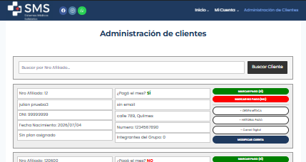
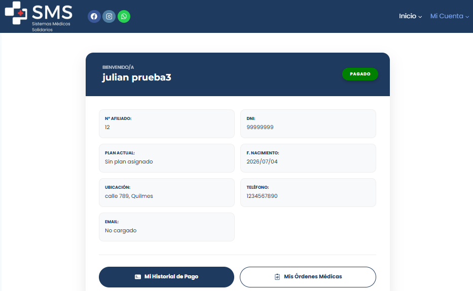
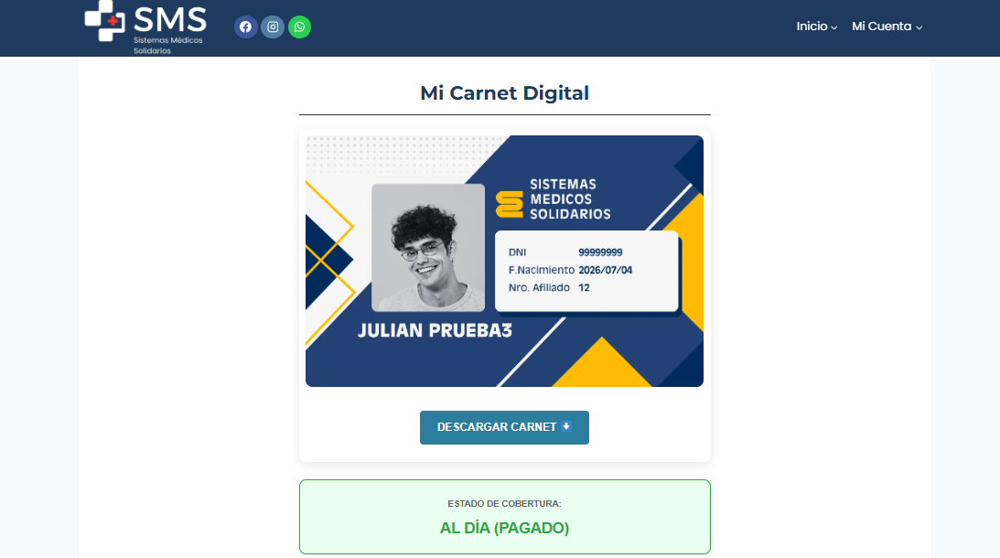
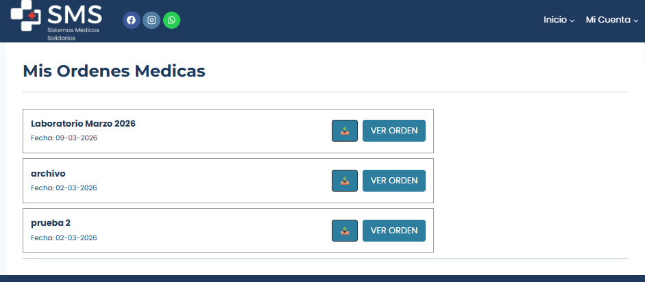

Resumen del Proyecto
Desarrollo de una plataforma web robusta para una organización de servicios médicos. El objetivo principal fue digitalizar la gestión de afiliados, permitiendo el acceso a credenciales, historial de pagos, ordenes médicas y solicitudes de atención de manera segura y eficiente. Todo administrado desde el panel de administracion de clientes, el cual solo pueden acceder los usuarios administradores
Arquitectura del Sistema
El sistema se construyó sobre el ecosistema de WordPress, pero extendido con lógica personalizada para manejar datos sensibles de salud.
- Base de Datos: Almacenamiento basado en User Metadata para escalabilidad.
- Niveles de Acceso: Roles diferenciados para Afiliados y Administradores.
- Shortcodes: Creación de componentes PHP a medida para paneles dinámicos.

Interfaz de Gestión Administrativa
Funcionalidades Implementadas
Panel "Mi Cuenta"
Un espacio exclusivo donde el afiliado visualiza su estado de cuenta, plan asignado y el grupo familiar cubierto. Todo sincronizado en tiempo real con la base de datos.

Carnet Digital Dinámico
Generación automática de credenciales digitales verificables. Elimina la necesidad de carnets físicos, permitiendo al socio identificarse ante prestadores médicos desde su teléfono.

Gestión de Turnos y Órdenes
Integración fluida con WhatsApp para la coordinación de citas y envío de órdenes médicas, optimizando la comunicación entre el paciente y el centro médico.

Impacto del Proyecto
La implementación de SMS permitió centralizar la información de cientos de familias, reduciendo en un 60% el tiempo de respuesta administrativa y eliminando los errores manuales en la gestión de cobros y estados de afiliación.